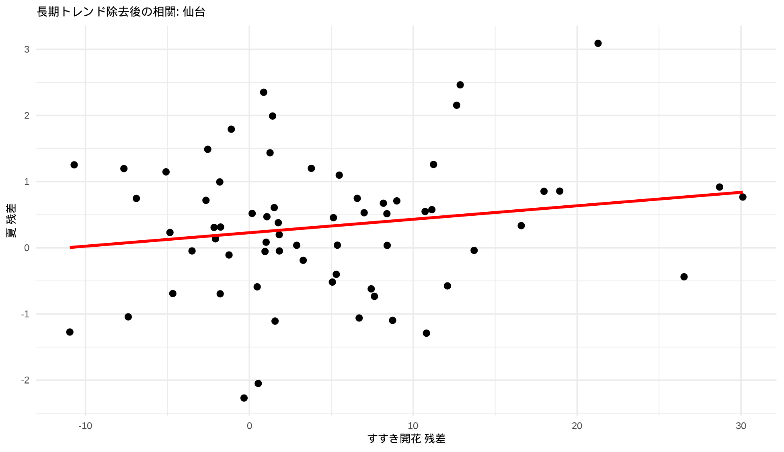
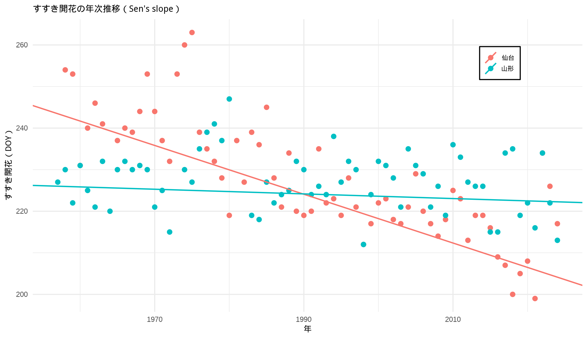
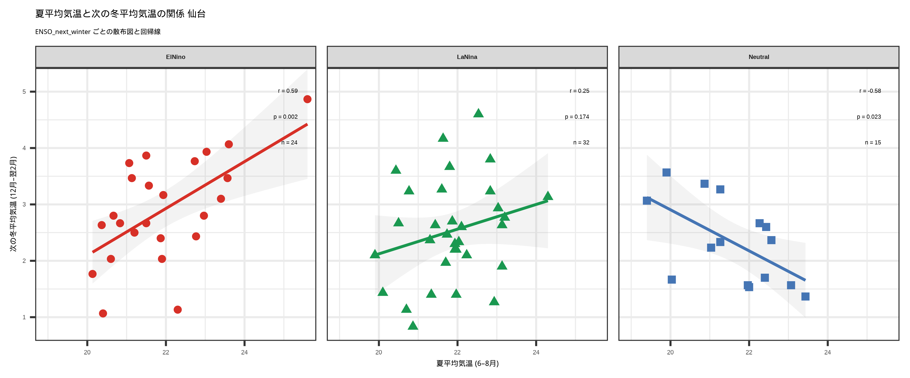
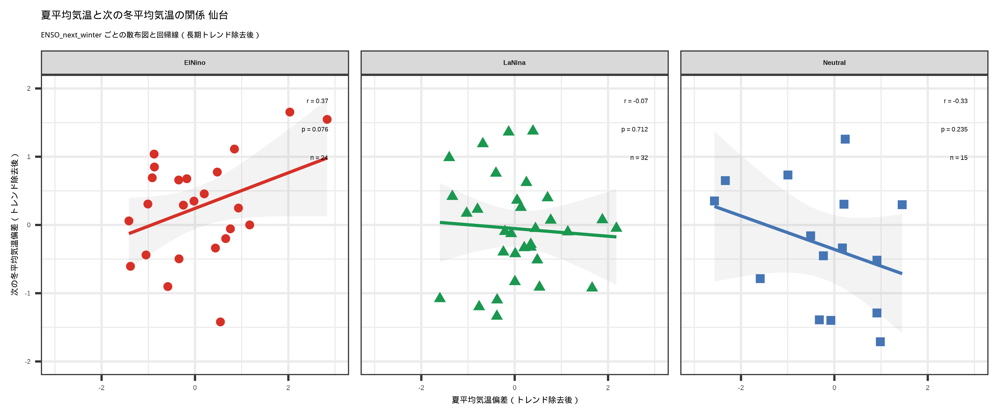

| 年 | さくら開花 | すすき開花 | いちょう黄葉 | 春 | 夏 | 秋 | 冬 |
|---|---|---|---|---|---|---|---|
| 1953 | 101 | NA | NA | 9.4 | 20.5 | 13.5 | 1.6 |
| 1954 | 96 | NA | NA | 10.0 | 19.9 | 14.5 | 2.5 |
| 1955 | 101 | NA | NA | 9.8 | 23.1 | 14.0 | 2.5 |
| 1956 | 106 | NA | 320 | 9.5 | 20.4 | 14.4 | 0.8 |
| 1957 | 106 | NA | 310 | 9.1 | 20.8 | 14.2 | 2.1 |
日本気象予報士会 東北支部 2026年3月例会
2026-03-14
2月例会話題提供では、「仙台」のデータを使って、さくら開花などの生物季節観測同士、あるいは気温との相関関係を算出した。
生物季節観測データ、気温には地球温暖化による長期トレンドが影響を及ぼしていると考えられることから、この長期トレンドを除去した相関関係を算出し、再検討してみることとした。
まずは基本データ（仙台の生物季節観測データと月毎の平均気温）の 抜粋は以下の通り。
| 年 | さくら開花 | すすき開花 | いちょう黄葉 | 春 | 夏 | 秋 | 冬 |
|---|---|---|---|---|---|---|---|
| 1953 | 101 | NA | NA | 9.4 | 20.5 | 13.5 | 1.6 |
| 1954 | 96 | NA | NA | 10.0 | 19.9 | 14.5 | 2.5 |
| 1955 | 101 | NA | NA | 9.8 | 23.1 | 14.0 | 2.5 |
| 1956 | 106 | NA | 320 | 9.5 | 20.4 | 14.4 | 0.8 |
| 1957 | 106 | NA | 310 | 9.1 | 20.8 | 14.2 | 2.1 |
長期トレンドの除去方法として、以下の3つを行った。
線形トレンドの除去
各系列に対して \(Y_i = a + b t + \epsilon_t\) の線形回帰を行い、残差を用いて相関を算出する
Sen’s slopeの除去
外れ値に強いロバストな線形回帰であるSen’s slopeを用いて、各系列のトレンドを除去し、残差を用いて相関を算出する
多変量回帰
相関ではなく \(sakura = \beta_0 + \beta_1 temp_{spring} + \beta_2 year + \epsilon\) のような多変量回帰を行い、年の影響をコントロールした上で、春の気温の影響を評価する
| 方法 | さくら開花と春の気温の相関 |
|---|---|
| 基本相関 | -0.794 |
| 線形トレンド除去後の相関 | -0.762 |
| Sen’s slope除去後の相関 | -0.741 |
基本相関は-0.794で、さくらの開花と春の気温には強い負の相関があることを示している。
線形トレンド除去後の相関は-0.762、Sen’s slope除去後の相関は-0.741で、いずれも基本相関と比較してやや弱くなっているが、依然として強い負の相関が存在することを示している。
多変量回帰による結果は以下の通り。
| term | estimate | std.error | statistic | p.value |
|---|---|---|---|---|
| (Intercept) | 143.556 | 42.063 | 3.413 | 0.001 |
| 春 | -4.962 | 0.445 | -11.153 | 0.000 |
| 年 | 0.004 | 0.022 | 0.165 | 0.869 |
春の係数-4.962は、春の気温が1度上昇すると、さくらの開花が約5日早まること、p=0.001 は非常に有意な結果であることを示している。 年の係数0.004は、さくらの開花が年々約0.004日遅くなっていることを示すが、p=0.869 であり有意ではない。
したがって、さくらの開花には春気温が強く影響しており、年の影響はほとんどない と推測できる。
| 方法 | すすき開花と夏の気温の相関 |
|---|---|
| 基本相関 | -0.339 |
| 線形トレンド除去後の相関 | 0.121 |
| Sen’s slope除去後の相関 | 0.101 |
基本相関は-0.339で、すすきの開花と夏の気温には弱い負の相関があることを示している。 しかし、線形トレンド除去後の相関は0.121、Sen’s slope除去後の相関は0.101で、いずれも基本相関と正負が逆転している上に相関が弱くなっている。
これを図化すると次ページの通りとなる。

多変量回帰による結果は以下の通り。
| term | estimate | std.error | statistic | p.value |
|---|---|---|---|---|
| (Intercept) | 1436.457 | 117.941 | 12.179 | 0.000 |
| 夏 | 1.442 | 1.047 | 1.377 | 0.173 |
| 年 | -0.623 | 0.064 | -9.714 | 0.000 |
夏の係数1.442は、夏の気温が1度上昇すると、すすきの開花が約1.442日遅れることを示すが、p=0.173であり、有意で無いことを示している。 年の係数-0.623は、すすきの開花が年々約0.623日遅くなっていることを示しており、p=0.000 で非常に有意である。
したがって、すすきの開花には夏気温の影響はなく、長期トレンド（経年）の影響が大きい と推定できる。
経年の効果としては温暖化の他、都市化、観測環境の変化などが考えられるか。
前述の通り仙台のすすき開花と年の相関は−0.623と比較的強い負の相関で、長期トレンド（温暖化、都市化など）の影響が考えられる。 そこで、仙台に近い場所で、仙台より都市化が進んでおらず、日本の気象の代表13地点にも入っている山形のケースを検証してみる。
| 方法 | すすき開花と夏の気温の相関（山形） |
|---|---|
| 基本相関 | 0.052 |
| 線形トレンド除去後の相関 | 0.048 |
| Sen’s slope除去後の相関 | 0.050 |
多変量回帰による結果は以下の通り。
| term | estimate | std.error | statistic | p.value |
|---|---|---|---|---|
| (Intercept) | 373.907 | 93.170 | 4.013 | 0.000 |
| 夏 | 0.473 | 0.864 | 0.547 | 0.586 |
| 年 | -0.079 | 0.051 | -1.555 | 0.125 |
多変量回帰による夏の係数0.473は、山形においては夏の気温が1度上昇すると、すすきの開花が約0.473日遅れることを示すが、p=0.586 は有意ではない。
年の係数-0.079は、すすきの開花が年々約0.079日遅くなっていることを示しているが、p=0.125 で有意ではない。
したがって、基本相関が0.052と非常に小さいことを考え合わせると、山形では、すすきの開花には夏気温も長期トレンドの影響も小さい という結論が得られる。
すすき開花の経年変化を仙台と山形で比較すると次のとおりである。

仙台と山形で、すすき開花の経年変化傾向は大きく異なっていることが分かる。
仙台と山形のケースと考え合わせると、すすきの開花には夏の気温の影響はなく、仙台に於いて長期トレンドの影響が大きいのは、仙台の都市化が進んでいる影響といえるかもしれない 。
次に、夏の気温と冬の気温について、長期トレンドを除去した上で相関関係をみてみる。
| 方法 | 夏の気温と冬の気温の相関 |
|---|---|
| 基本相関 | 0.302 |
| 線形トレンド除去後の相関 | 0.146 |
| Sen’s slope除去後の相関 | 0.135 |
基本相関は0.302で、夏の気温と冬の気温には弱い正の相関があることを示している。線形トレンド除去後の相関は0.146、Sen’s slope除去後の相関は0.135で、いずれも基本相関と比較して半減しており、基本相関の弱い相関は長期トレンドの影響によるものと考えられる。
多変量回帰による結果は以下の通り。
| term | estimate | std.error | statistic | p.value |
|---|---|---|---|---|
| (Intercept) | -30.581 | 13.317 | -2.296 | 0.025 |
| 冬 | 0.139 | 0.156 | 0.890 | 0.376 |
| 年 | 0.026 | 0.007 | 3.858 | 0.000 |
冬の係数0.139は、冬の気温が1度上昇すると、夏の気温が約0.139度上昇することを示すが、p=0.376 は有意ではない。
年の係数0.026は、夏の気温が年々約0.026度上昇していることを示しており、p=0.000 で非常に有意である。これは温暖化のトレンドと考えられる。
したがって、夏の気温には冬の気温の影響はなく、長期トレンドの影響が大きい という結論が得られる。
気象庁の定義※による、エルニーニョ現象・ラニーニャ現象の発生期間について、夏の平均気温と次の冬の平均気温について相関を調べた。
※ https://www.data.jma.go.jp/cpd/data/elnino/learning/faq/elnino_table.html
夏の平均気温と次の冬の平均気温（仙台）※下図は長期トレンド除去後

